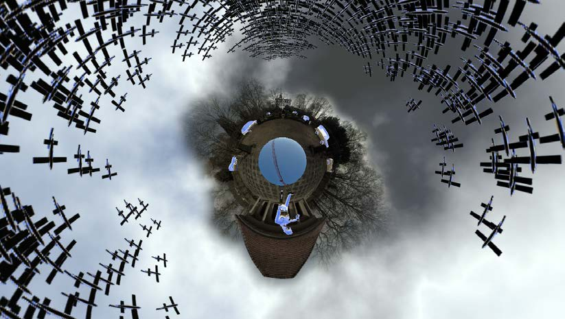
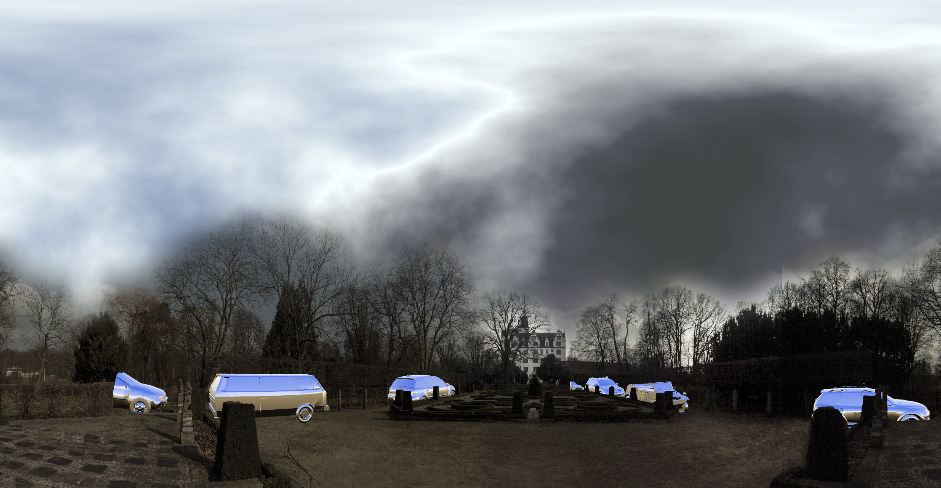
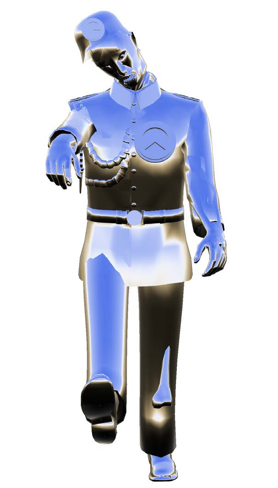

Wolfsburg 1933-1945
2018 · Single-channel 360° VR-video
Wolfsburg 1933-1945 is a single-channel 360° VR-video by Nickii Schamborski, 2018.



About the work
"Wolfsburg" is a site-specific VR film set at Schloss Wolfsburg that raises historical and cultural questions about Wolfsburg's fascist origins. The immersive film reflects on the role of Volkswagen production and the construction of a new shopping mall on the last remnants of former camps, once inhabited both by concentration camp prisoners and later by so-called guest workers or migrant laborers. The work addresses the ghostly return of suppressed history: how beneath the gleaming surface of consumer culture, the unresolved Nazi past continues to operate and returns in the form of "cultural zombism." The film focuses on the way historical amnesia and commercial development create a haunting double presence.
Zur Arbeit
Wolfsburg ist ein ortsspezifischer VR-Film, der im Schloss Wolfsburg spielt und historische und kulturelle Fragen über die faschistischen Ursprünge Wolfsburgs aufwirft. Der immersive Film reflektiert die Rolle der Volkswagen-Produktion und den Bau eines neuen Einkaufszentrums auf den letzten Überresten ehemaliger Lager, die einst sowohl von KZ-Häftlingen als auch später von sogenannten 'Gastarbeitern' oder 'Wanderarbeitern' bewohnt wurden. Die Arbeit befasst sich mit der gespenstischen Rückkehr der verdrängten Geschichte - damit, wie unter der glänzenden Oberfläche der Konsumkultur die unbewältigte Nazi-Vergangenheit weiterwirkt und in Form von kulturellem Zombismus wiederkehrt.
Details
- Year
- 2018
- Type
- Single-channel 360° VR-video
- Specs
- 01:54 min
- Institution / place
- Schloss Wolfsburg